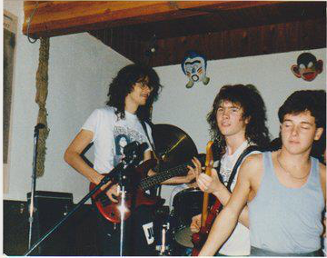
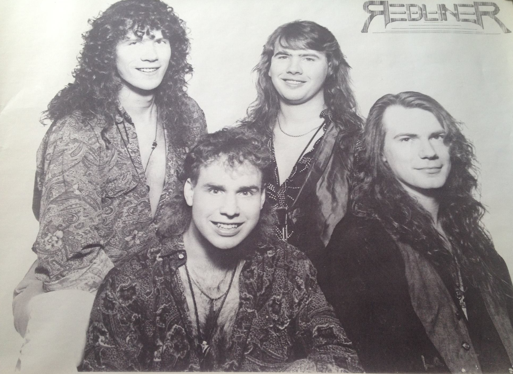

https://soundcloud.com/purplecabbage
code here: http://github.com/purplecabbage/phonegap-webaudio-samples

### Getting Started
### AudioContext
- webkit prefix for Safari (sad trombone)
- getting an AudioContext, the safe way.
```js
var AudioContext = window.AudioContext || window.webkitAudioContext;
// or you may see
var audioContext = new (window.AudioContext || window.webkitAudioContext)();
```
### Loading a sound
``` js
var audioContext = new AudioContext();
var myBuffer; // this is where we will store audio buffer data
// Prime the Pump! ( I invented that term, really! )
var request = new XMLHttpRequest();
request.open('GET', path_to_file, true);
request.responseType = 'arraybuffer';
// Decode is done asynchronously
request.onload = function() {
audioContext.decodeAudioData(request.response,
function(buffer) {
myBuffer = buffer;
},function(err){
console.log("Error :: " + err);
});
};
request.send();
```
### Playing the sound
``` js
AudioBufferSourceNode.start([when][, offset][, duration]);
var source = audioContext.createBufferSource();
source.buffer = myBuffer;
source.connect(audioContext.destination);
source.start(0);
```
### AudioBufferSourceNode(s) are for SHORT audio
> Objects of these types are designed to hold small audio snippets, typically less than 45 s. For longer sounds, objects implementing the MediaElementAudioSourceNode are more suitable
### Playing a longer file
```
```
``` js
var source = audioContext.createMediaElementSource(forFil);
source.connect(audioContext.destination);
forFil.play();
```
Demo!
#### More about audio sources:
There are multiple ways to create them ...
#### From a file container with PCM data
- `createBuffer`
- `createBufferSource`
- `decodeAudioData`
#### Generated in JS, Oscillators
- `AudioContext.createOscillator();`
#### Using HTML media elements such as `
#### WebRTC MediaStream
- such as from the microphone or camera
- not really there yet for mobile :(
### Supported file formats
- Varies by browser, unfortunately
- Some support Ogg or FLAC, but I recommed sticking with un-compressed AAC/pcm-wave data
- AAC in MP4
- PCM in WAV
### Keeping Time
- bpm, quantization, being responsive, avoiding setInterval
- scheduling sound, that `when` parameter is useful
- Comment: avoiding 'machine-gun' effect
- Concrete example: Adagio - free in the iOS + Windows app stores.
https://play.google.com/store/apps/details?id=com.risingj.adagio
### Avoiding setTimeout where you can
``` js
window.requestAnimFrame = window.requestAnimationFrame ||
window.webkitRequestAnimationFrame ||
window.oRequestAnimationFrame ||
window.mozRequestAnimationFrame ||
window.msRequestAnimationFrame ||
function( cb ) {
window.setTimeout(cb, 1000 / 60);
};
```
### You're a little pitchy dude!
- A-440Hz vs A-432Hz Nazis and Chakras
``` js
// Initialize note pitches using equal temperament (12-TET)
// A4 = MIDI key 69
for (var i = 0; i < NumNotes; i++) {
notes[i] = {
pitch:440 * Math.pow(2, (i - 69)/12.0)
};
//console.log(i + ":" + notes[i].pitch);
}
```
Demo : Frets
- The TunedInstrument module
- Concrete example: Frets
- Comment, using ranges of notes with audio files
- Building a piano keyboard in html
- use as a simple instrument note trigger
- demo multiple audio sources, piano, guitar, ...
### Synth topics
- Oscillators: sine, square, triangle, sawtooth, or roll your own
- Different Nodes in WebAudio
- GainNode
- AudioDestinationNode
- ConvolverNode - perform reverb effects
- DynamicsCompressorNode
- DelayNode
- ChannelSplitterNode
- ChannelMergerNode
- AnalyserNode - does not change the buffer, but it observes it and provides info via FFT
#### Arpeggiator
##### RPG8 ? What's an Arpeggiator?
#### Creating an Oscillator
```
var audioCtx = new AudioContext();
var oscillator = audioCtx.createOscillator();
oscillator.type = 'triangle';
// sine wave is default — other values are 'square', 'sawtooth', 'triangle' and 'custom'
oscillator.frequency.value = 880; // value in hertz
var gainNode = audioCtx.createGain();
gainNode.gain.value = 0.5;
oscillator.connect(gainNode);
gainNode.connect(audioCtx.destination);
oscillator.start(0); // immediately
```
Demo